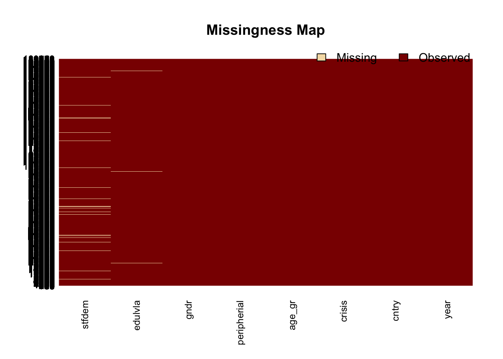
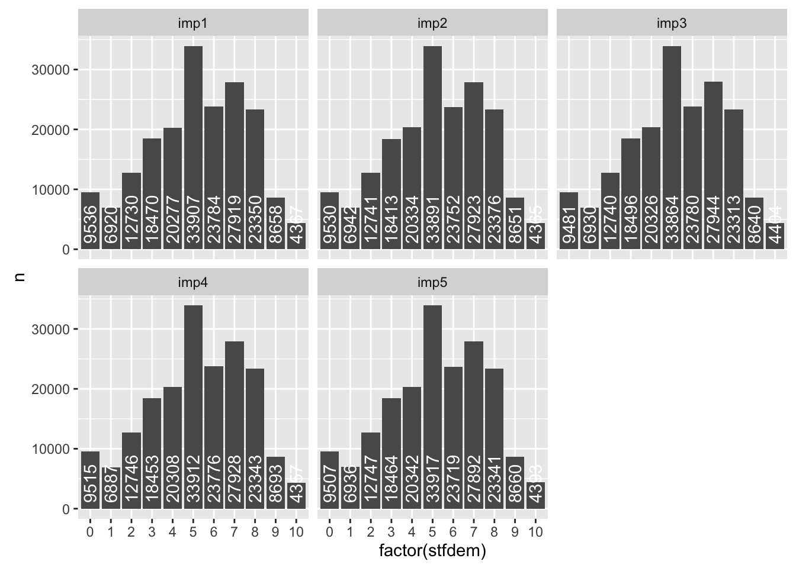
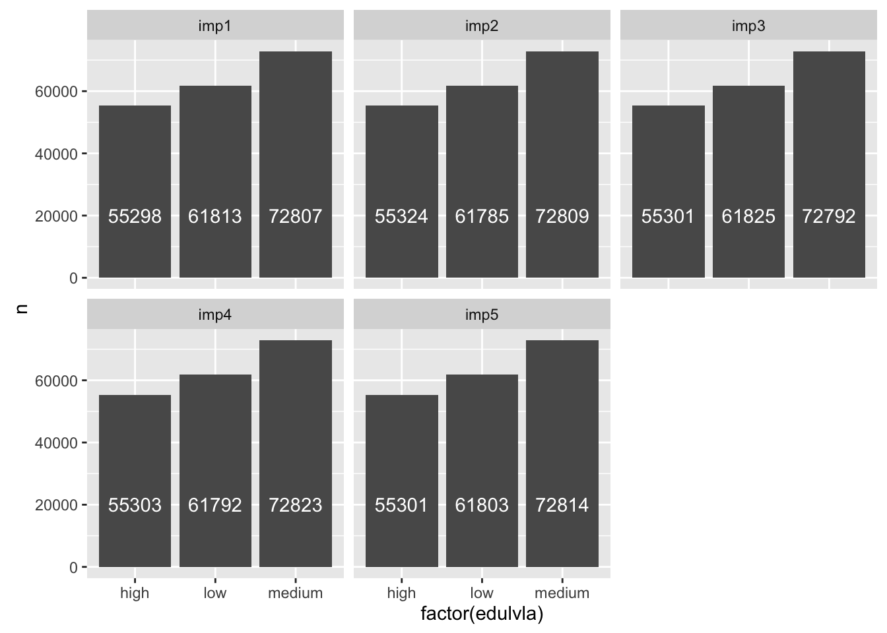

In this lesson we will use the Amelia package and a subset of Beatrice Magistro’s dataset, with data from the European Social Survey. Notice that for the Zelig package, we need an older version (Zelig4). This is because the new version runs into some issues when estimating models using multiple imputated datasets.
# install.packages("Amelia")
library(Amelia)
library(devtools)
install_github("IQSS/Zelig4")
library(Zelig)
library(ggplot2)
library(dplyr)
ess_sub <- read.csv("data/ess_sub.csv")Each row in the dataset is an indivdual’s response to the survey and it has the following variables:
| variable | description |
|---|---|
stfdem |
Satisfaction with democracy: {1-10 scale} (ordinal) |
year |
Year: {2002, 2003, …, 2012} (time variable) |
cntry |
Country: {DE, GB, …, NL} (cross section variable) |
crisis |
Crisis: {post, pre} (ordinal) |
age_gr |
Age group: {18-34, 35-64, +65} (ordinal) |
edulvla |
Education level: {low, medium, high} (ordinal) |
gndr |
Gender: {Men, Women} (categorical) |
peripherial |
Peripherial countries: {core, peri} (categorical) |
Often the datasets we use to test our theories and hypotheses have some, and sometimes numerous, missing values (NA). What do we do?
One option would be to drop the rows that have a missing value for one of our covariates and/or the variable of interest. For example, when we estimate a linear model, R automatically gets rid of the rows with missing values for the variables in the model (“listwise deletion”). In this case 7,344 observations.
model <- lm(stfdem ~ crisis + age_gr + edulvla + gndr + peripherial,
data = ess_sub)
summary(model)##
## Call:
## lm(formula = stfdem ~ crisis + age_gr + edulvla + gndr + peripherial,
## data = ess_sub)
##
## Residuals:
## Min 1Q Median 3Q Max
## -6.0930 -1.6938 0.1299 1.8842 5.6123
##
## Coefficients:
## Estimate Std. Error t value Pr(>|t|)
## (Intercept) 5.87012 0.01879 312.469 < 2e-16 ***
## crisispre 0.22285 0.01177 18.931 < 2e-16 ***
## age_gr18-34 -0.10679 0.01754 -6.087 1.15e-09 ***
## age_gr35-64 -0.20238 0.01500 -13.488 < 2e-16 ***
## edulvlalow -0.71168 0.01522 -46.752 < 2e-16 ***
## edulvlamedium -0.62842 0.01382 -45.470 < 2e-16 ***
## gndrWomen -0.24200 0.01134 -21.349 < 2e-16 ***
## peripherialperi -0.32635 0.01316 -24.800 < 2e-16 ***
## ---
## Signif. codes: 0 '***' 0.001 '**' 0.01 '*' 0.05 '.' 0.1 ' ' 1
##
## Residual standard error: 2.414 on 182566 degrees of freedom
## (7344 observations deleted due to missingness)
## Multiple R-squared: 0.02418, Adjusted R-squared: 0.02414
## F-statistic: 646.1 on 7 and 182566 DF, p-value: < 2.2e-16However, despite not having a value for a particular variable or set of variables, thoses row may provide information about the other variables. Moreover, dropping those observation may result in biased and inefficient estimates.
The other option is to impute (“fill in”) the missing values. In this lesson we will see one method and R package to do so: Amelia. This method assumes that the data:
Then the Amelia uses a bootstrap-EM algorithm (EMB) to estimate/impute the missing values.
The summary() function provides you with information about the number of missing values per variable. This dataset has missing values for the outcome variable (stfdem) and the covariates edulvla and gndr.
summary(ess_sub)## stfdem year cntry crisis
## Min. : 0.000 Min. :2002 DE : 16145 post: 68948
## 1st Qu.: 4.000 1st Qu.:2004 GB : 12521 pre :120970
## Median : 5.000 Median :2008 IE : 12324
## Mean : 5.189 Mean :2007 PT : 11774
## 3rd Qu.: 7.000 3rd Qu.:2010 FI : 11260
## Max. :10.000 Max. :2012 NL : 11048
## NA's :6405 (Other):114846
## age_gr edulvla gndr peripherial
## +65 : 40674 high :55013 Men : 88053 core:137997
## 18-34: 46887 low :61545 Women:101752 peri: 51921
## 35-64:102357 medium:72443 NA's : 113
## NA's : 917
##
##
## The Amelia package has a function that helps visualizing the missing data in a dataset: missmap(). Warning: takes few minutes to run, depending on the size of the dataset.
missmap(ess_sub)
The amelia() function takes the following parameters:
x: the dataset (e.g. ess_sub)m: number of imputed datasets to create (e.g. 5, see Fox, p.564)logs: a vector with variables that are log transformationslogstc: a vector with variables that are logistic transformationsnoms: a vector with variables that are nominal (e.g. gnder, peripherial)ords: a vector with variables that are ordinal (e.g. stfdem)ts: name of the variable indicating time (for time series data) (e.g. year)cs: name of the cross section variable (for cross section data) (e.g. cntry)idvars: name of a variablde indicating ID, so Amelia can ignore itThe amelia() function will create m (so 5) new datasets with imputed values for the all missing values iness_sub.
amelia_output <- amelia(ess_sub, m = 5, ts = "year" , cs = "cntry",
ords = c("stfdem", "crisis", "age_gr","edulvla"),
noms = c("gndr", "peripherial"))## -- Imputation 1 --
##
## 1 2
##
## -- Imputation 2 --
##
## 1 2
##
## -- Imputation 3 --
##
## 1 2
##
## -- Imputation 4 --
##
## 1 2
##
## -- Imputation 5 --
##
## 1 2The imputed datasets are in the imputations list within the amelia_output. You can combine them into one dataset using the following loop:
ess_all <- NULL
for (i in 1:length(amelia_output$imputations)) {
imp <- as.data.frame(amelia_output$imputations[i])
colnames(imp) <- colnames(ess_sub)
imp$imp <- paste0("imp", i)
ess_all <- rbind(ess_all, imp)
}You can also access a matrix indicating the original missing values in the amelia_output. This will be useful to compare differences between actual and imputed data and to make judgements about the quality/plausibility of the imputed data.
missMatrix <- amelia_output$missMatrixFor the variables with missing values (e.g. stfdem, edulvla), explore differences across imputed datasets.
ggplot(ess_all %>%
group_by(imp,stfdem)%>%
summarize(n = n()), aes(y = n, x = factor(stfdem))) +
geom_bar(stat = "identity") +
geom_text(aes(label = n), vjust = 0.5, y = 1000, hjust = 0,position = ,
angle = 90, color = "white") +
facet_wrap(~ imp)
ggplot(ess_all %>%
group_by(imp,edulvla)%>%
summarize(n = n()), aes(y = n, x = factor(edulvla))) +
geom_bar(stat = "identity") +
geom_text(aes(label = n), vjust = 0.5, y = 20000, hjust = 0.5,position = ,
color = "white") +
facet_wrap(~ imp)
Check Jeff Arnold’s lesson on Multiple Imputation to see other ways of evaluating the plausibility of the imputated data.
See Fox p.656 for details about how to combine the coefficients from different imputated datasets.
The Zelig package combines the coefficients for us and makes it very easy to estimate models using multiple imputated datasets.
model <- zelig(stfdem ~ year + cntry + crisis + age_gr + edulvla + gndr + peripherial, data = amelia_output, model = "ls")##
##
## How to cite this model in Zelig:
## Kosuke Imai, Gary King, and Olivia Lau. 2016.
## "ls: Least Squares Regression for Continuous Dependent Variables"
## in Kosuke Imai, Gary King, and Olivia Lau, "Zelig: Everyone's Statistical Software,"
## http://gking.harvard.edu/zelig
## summary(model)##
## Model: ls
## Number of multiply imputed data sets: 5
##
## Combined results:
##
## Call:
## lm(formula = formula, weights = weights, model = F, data = data)
##
## Coefficients:
## Value Std. Error t-stat p-value
## (Intercept) -1.466999390 5.906553046 -0.2483681 8.038502e-01
## year 0.003650299 0.002936965 1.2428813 2.139147e-01
## cntryCY 0.498796969 0.042967529 11.6086956 5.291810e-31
## cntryCZ -0.620850516 0.034777845 -17.8518974 2.895941e-65
## cntryDE -0.233892512 0.030027594 -7.7892524 9.525909e-15
## cntryDK 1.787456460 0.033995450 52.5792845 0.000000e+00
## cntryEE -0.659662967 0.034898723 -18.9022094 4.586727e-70
## cntryES 0.027109963 0.032523222 0.8335571 4.045624e-01
## cntryFI 1.083276602 0.032905484 32.9208527 1.224717e-144
## cntryFR -0.735998903 0.032485936 -22.6559240 4.431678e-112
## cntryGB -0.364977447 0.031544476 -11.5702491 2.372440e-30
## cntryGR -0.541065277 0.033381724 -16.2084281 5.061924e-59
## cntryHU -1.364773019 0.035788500 -38.1344010 3.566958e-248
## cntryIE -0.195322354 0.031313180 -6.2377042 4.579955e-10
## cntryIT -0.662910576 0.046227537 -14.3401663 3.104940e-45
## cntryNL 0.595158770 0.032445365 18.3434144 5.021610e-71
## cntryPL -0.802276312 0.034694880 -23.1237668 3.596563e-118
## cntryPT -1.293144195 0.032707798 -39.5362661 7.318642e-222
## cntrySE 0.940723499 0.032742001 28.7313994 3.627887e-174
## cntrySI -1.221410283 0.038732963 -31.5341295 1.092874e-128
## cntrySK -0.847726436 0.034784395 -24.3708837 9.349588e-129
## crisispre 0.158807538 0.020318088 7.8160670 6.799730e-15
## age_gr18-34 -0.105059451 0.017675705 -5.9437207 1.327059e-08
## age_gr35-64 -0.226648201 0.014617280 -15.5054978 4.913836e-44
## edulvlalow -0.539944779 0.014701513 -36.7271567 2.451043e-261
## edulvlamedium -0.409882252 0.013391424 -30.6078174 4.855206e-204
## gndrWomen -0.178518244 0.010755750 -16.5974703 2.676627e-60
##
## For combined results from datasets i to j, use summary(x, subset = i:j).
## For separate results, use print(summary(x), subset = i:j).